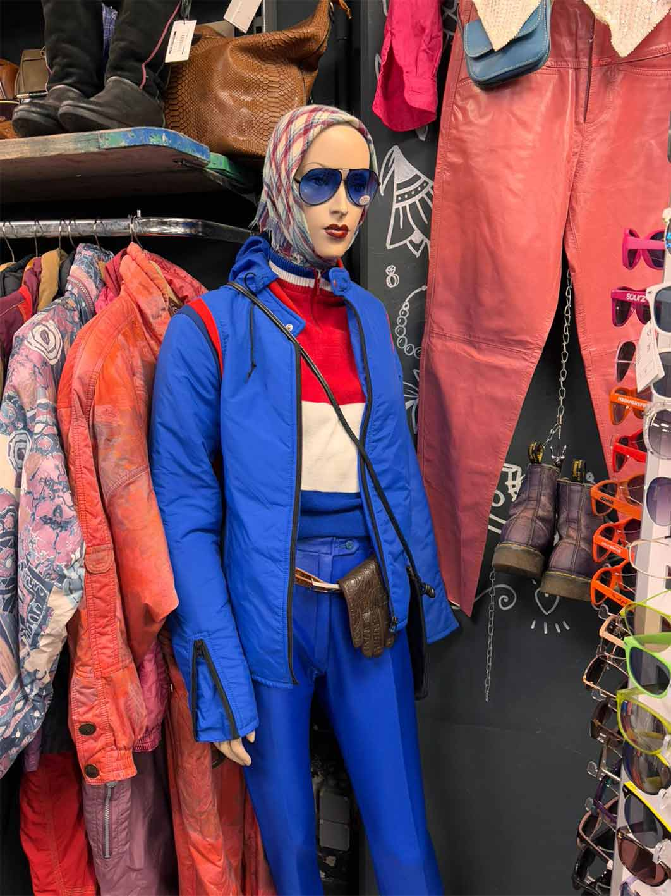

Over ons
Mijn missie is om zoveel mogelijk mensen te helpen met oud vintage kleding. Ik vind namelijk dat elke kledingstuk een thuis verdient! Voor zowel de amsterdammers met een krap inkomen of voor degene die een passie hebben voor vintage kleding. Niks is te gek voor ons! Wil jij hieraan bijdragen? Wees vooral niet bang en kom langs!
Wij hebben veel vestigingen over heel Amsterdam waar allerlei soorten kleding aanwezig zijn. Zo is er om elke hoek van Amsterdam wel een vestiging waar jij langs kunt gaan. Bekijk de 'locatie' tab voor de actuele informatie
Een verschil maken kunnen we uiteraard niet alleen! Zou jij graag een handje willen helpen? Dat ben je uiteraard altijd welkom! Er staat bij elke vestiging een contactpersoon die je graag daarbij helpt :)